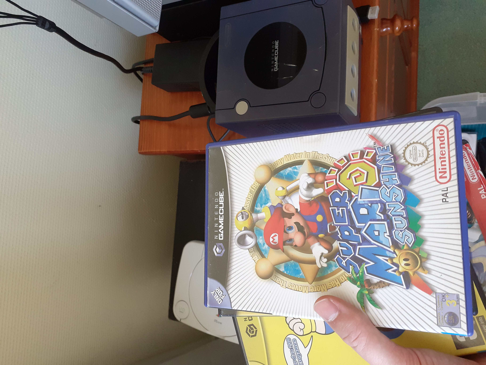
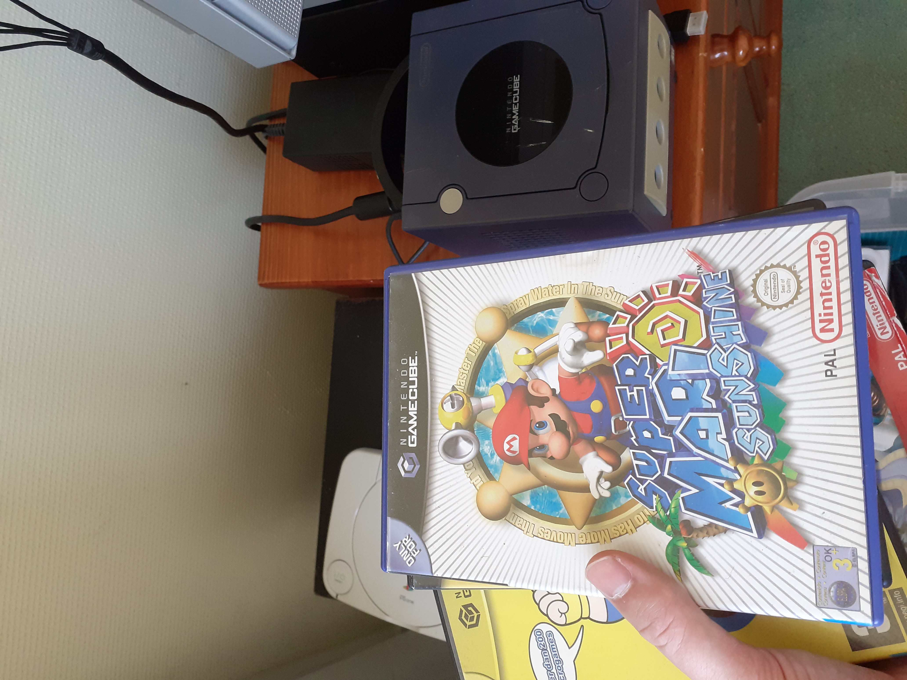
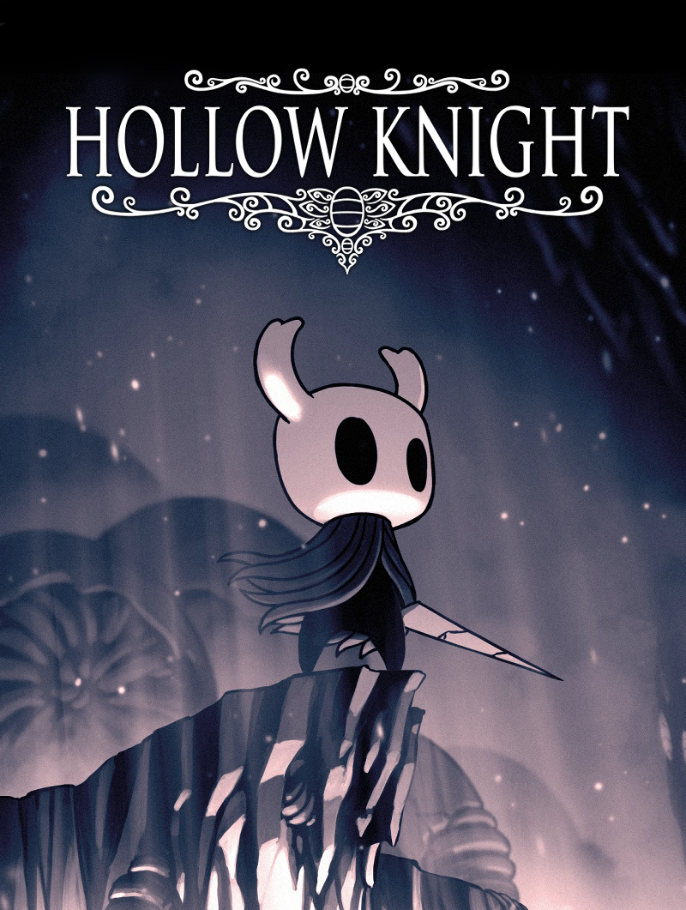
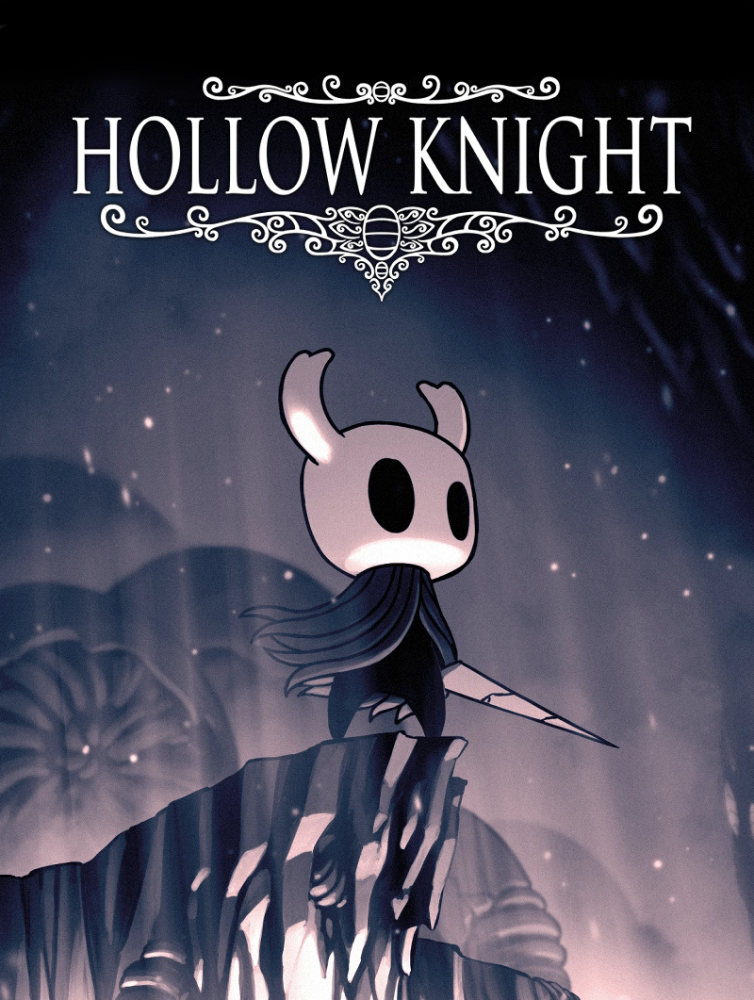
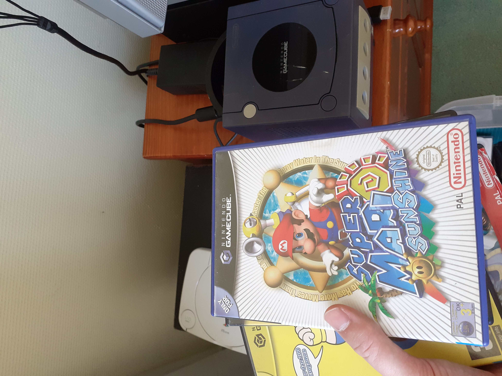
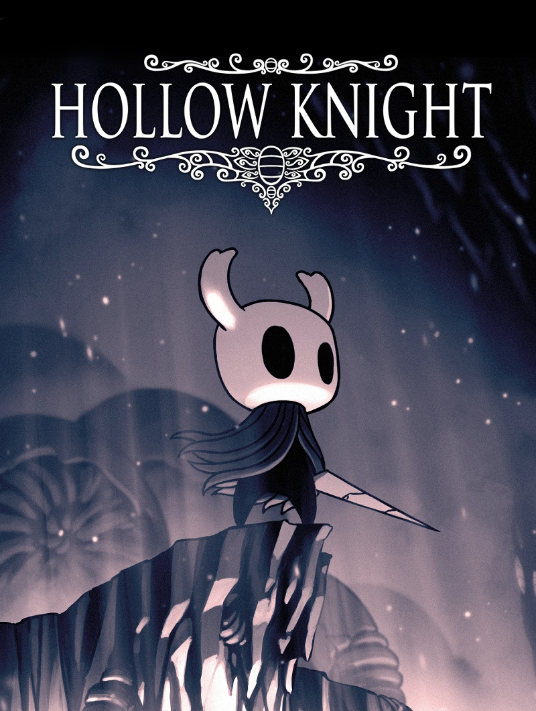

 Waar ik ook van houd is games. Zoals deze:
 



EÃÅen van mijn hobbies is computers, en oudere (spel)computers / technologie.

Waar ik ook van houd is games. Zoals deze:

Hoewel het misschien zo lijkt, is gamen niet mijn enige hobby. Een andere hobby is alcohol
(hier zou ik nog een hele pagina mee kunnen vullen maar ik ben hier al veel te veel tijd aan kwijt dus dat doe ik niet)


Ik houd ook van boeken, ook al lees ik niet bijster veel.
Een boek waar ik van houd is Metro 2033, van Dmitry Glukhovsky.
Verder [woorden woorden woorden, ik ben niet goed in woorden hier zijn wat links naar wat ik leuk vind]
De Blink serie
door
Jamie Lannister Harris
(het eerste boek kost geld om te lezen, het vierde boek is nog niet af)
Furnace
(in de toekomst deel van een serie), ook door Jamie Oliver Harris
Verder kan ik me nog herinneren dat meerdere boeken van Jan Terlouw, waaronder Oorlogswinter, Koning van Katoren en Zoektocht in Katoren, goed zijn.
Kruistocht in Spijkerbroek is ook een goed boek.
Fictionele werken waarin een daarvoor ontwikkelde taal en / of schrift voorkomt zijn altijd leuk.
Bijvoorbeeld de Legend of Zelda serie, met